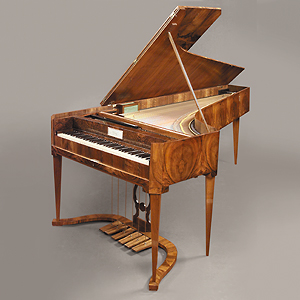
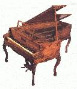
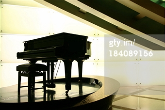
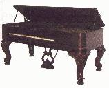
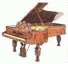
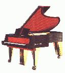
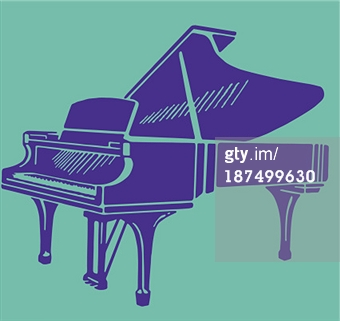

“The piano keys are black and white but they sound
like a million colors in your mind"
The Piano: It's Early History
The first true piano was invented almost entirely by one
man, a modest harpischord maker named Bartolomeo di
Francesco Cristofori. He was a intelligent man who
created many stringed instruments such as the spinet,
virginal, clavecin, gravicembalo, and finally, the
harpsichord.
First exhibited in Florence in 1709, the new instrument
was named gravicembalo col piano e forte (roughly
“soft and loud keyboard instrument”). Eventually,
it was shortened to fortepiano and then finally just the
"piano".
The touching sounds of the piano chords emerged make it one
of the most popularly played instruments today. A highly versatile
instrument capable of playing almost anything an orchestra can play!
Fun Facts
It can sustain pitches in a lyrical fashion creating all musical styles and moods
Broadly defined as a "stringed" keyboard instrument with a hammer action!
In it's early years the piano became the central instrument of music pedagogy and amateur study
One of the easiest instruments to transition from soft and loud
No middle-class household of any stature in Europe or North America was without one!
It strong defined a family's stature
it is one of the worlds most celebrated instrument
Is there only one kind of Piano?
Although Bartolomeo di Francesco Cristofori set the roots for the importance of the piano today,
many inventors took the idea and added different aspects to the way they were built!
Piano Types
The Viennese Piano
The sound made by a Viennese piano of this type is much lighter and
more delicate than that of a modern instrument. The great Viennese
composers, Mozart, Beethoven, Haydn and others, would have played the
Viennese piano
The English Piano
Rococo instruments such as this are adorned with shell-like flourishes.
The style was prominent in Europe during the 18th century and was revived in
the middle of the 19th.
The Modern Piano
The first D-style grand piano was made in about 1857, but it took a further
ten years for Steinway to develop its unique rim-bending process.
The Square Piano
In the concert hall, the square piano had one advantage over the grand piano:
the direct line of view from the audience to the pianist and that it is smaller in size.
The "Art-Case" Piano
Known as a 'Centennial Grand', it was built in 1876, 100 years after the American
Declaration of Independence.
The Avant-Garde Piano
This piano employs a modern style based on strong color and extensive use of brass
The Grand Piano
The most widely used piano today! Grand pianos have become the
benchmark for well-crafted pianos!
Every class of piano is different and many play different ranges, but essentially the beautiful
music they all produce is one in the same.
Gallery of Piano Types
The Viennese Piano
A beautifully cherry colored Viennese Piano
The English Piano
 The English Piano adds "Class" to any room...
The Modern Piano
Stunning D-Shaped Piano in all it's glory!
The Square Piano
The Name Says it all, a smaller Squared shape piano fits
more comfortably for those in smaller homes
The "Art-Case" Piano
Piano's have always reflected the furniture style of their times, as
shown here
The Avant-Garde Piano
A detailed example of architectural knowledge of wood materials with
artistic flair!
The Grand Piano
The Grand Piano with a little more color!
{kind=link}
{kind=link}
{kind=link}
{kind=link}
{kind=link}
{kind=link}
{kind=link}